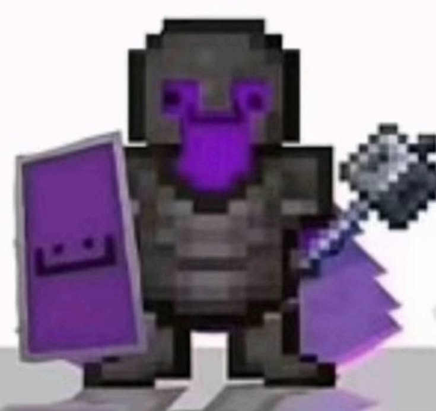
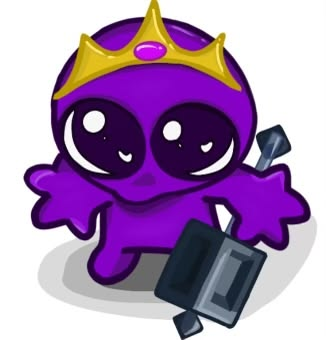

Wemmbu to twórca treści na YouTube, kojarzony głównie z grą
Minecraft, w szczególności z serwerem Unstable SMP, gdzie
zyskał rozpoznawalność jako bardzo utalentowany gracz.
Czę
sto pojawia się w kontekście teorii dotyczących tajemniczych
graczy na tym serwerze.
Jego materiały skupiają się na dynamicznej rozgrywce i walce.
Kluczowe informacje:
Minecraft: Wemmbu jest znany z zaawansowanej gry w Minecraft.
Unstable SMP: Jest aktywnym uczestnikiem i uznawanym za jednego z najlepszych graczy (GOAT) na serwerze Unstable SMP.
Styl: Jego styl gry cechuje się wysokimi umiejętnościami, często analizowanymi przez społeczność.